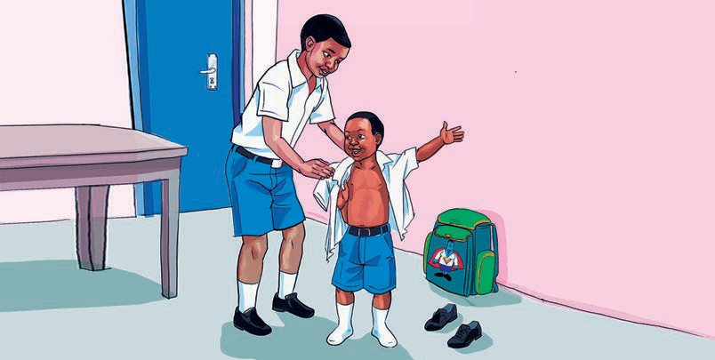
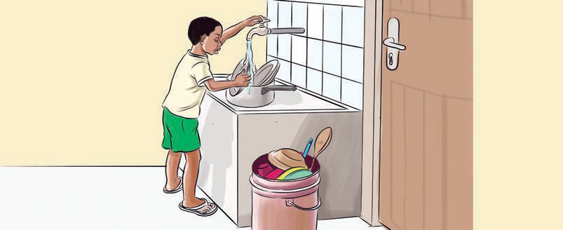

(f) Kutenda vitendo vya kimaadili vinavyokubalika na jamii yako;
(g) Kujilinda na kulinda watoto wengine dhidi ya vitendo vya ukatili, udhalilishaji na unyanyasaji maeneo ya nyumbani;
(h) Kuwasadia wadogo zako wanapohitaji msaada kama inavyoonekana katika Kielelezo namba 5;

Kielelezo namba 5: Kaka akimsaidia mdogo wake kuvaa nguo
(i) Kufanya usafi binafsi wa mwili, nguo na vyombo ulivyotumia kula chakula kama inavyoonekana katika Kielelezo namba 6; na

Kielelezo namba 6: Mtoto akifanya usafi wa vyombo alivyolia chakula
Historia ya Tanzania na Maadili STD 3 PB Final.indd 50
29/11/2024 17:14